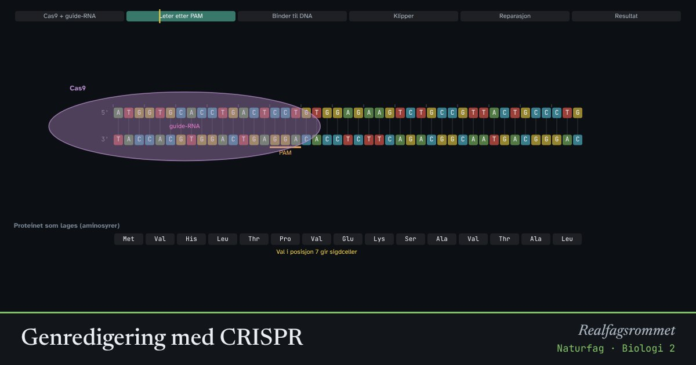

Genredigering med CRISPR
CRISPR-Cas9 er en genetisk saks. Et kort RNA-stykke viser saksa hvor i DNA-et den skal klippe. Når cellen reparerer bruddet, kan genet slås av eller rettes opp. Her prøver vi å rette mutasjonen som gir sigdcelleanemi.
Start animasjonen
Formler
Om animasjonen
Cas9 er et enzym fra bakterier, som bruker det til å klippe opp DNA fra virus. Forskerne lager et guide-RNA med 20 baser som passer til stedet i genet de vil endre. Cas9 klipper bare der guide-RNA passer, og der det står en kort PAM-sekvens (NGG) ved siden av.
Når DNA-et er klippet, reparerer cellen bruddet. Uten mal skjøtes endene ofte sammen med en liten feil. Da forskyves leserammen, proteinet blir ødelagt, og genet er i praksis slått av. Med en mal kan cellen kopiere inn en ny sekvens.
Sigdcelleanemi skyldes én baseendring i genet for hemoglobin: GAG er blitt til GTG, og aminosyren glutaminsyre (Glu) er byttet ut med valin (Val). I dag finnes en godkjent behandling basert på CRISPR, men den virker på en annen måte enn denne forenklede animasjonen.
Genredigering reiser etiske spørsmål: Er det greit å endre gener i embryoer, som arves videre? Hvem skal få tilgang til dyre behandlinger? Hva med genredigerte planter og dyr i matproduksjonen?
Prøv dette
- Hvorfor trenger Cas9 et guide-RNA?
- Hva skjer med proteinet når én base forsvinner ved reparasjonen?
- Finn kodonet som er endret i den rettede sekvensen. Hvilken aminosyre blir byttet?
- Diskuter: Bør det være lov å redigere gener i embryoer?
Kompetansemål
- Naturfag: Bioteknologi og etiske spørsmål